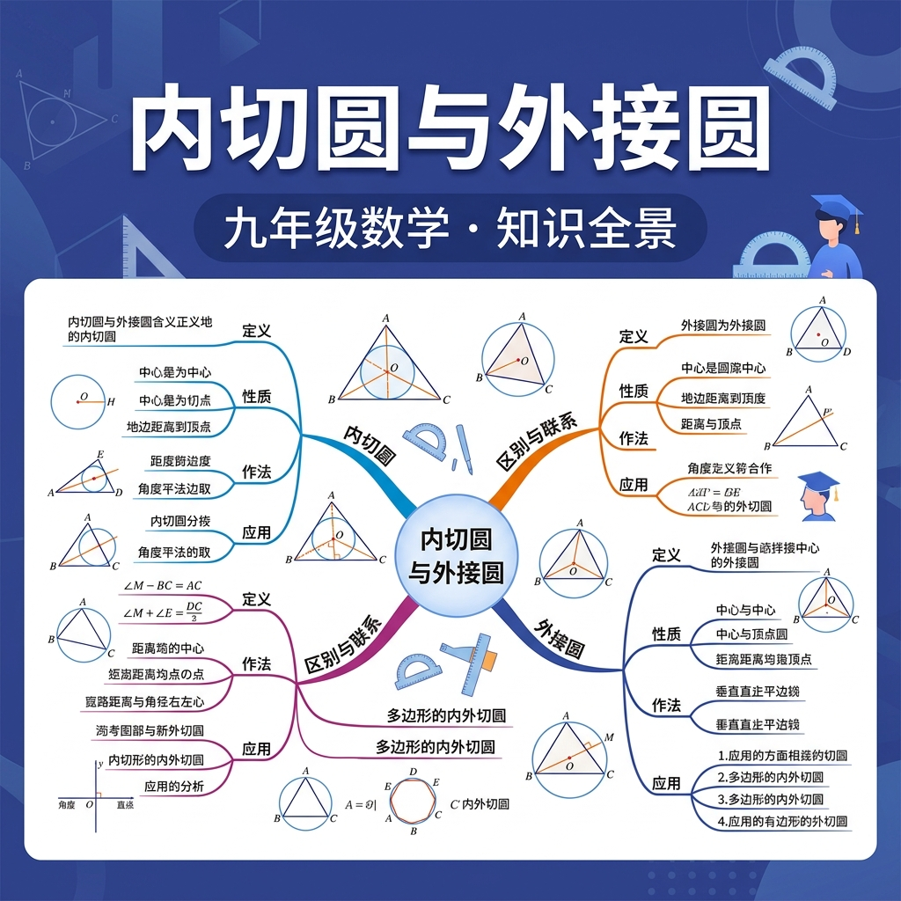

1. 三角形有几条角平分线？它们有什么特点？
2. 三角形各边的垂直平分线交于一点，该点叫？
三个城市A、B、C要建一个等距离的通信中心——And中心到三个城市距离相等（都等于外接圆半径）；But这个中心就是三角形的外心；Therefore三角形外接圆圆心是三边垂直平分线的交点（外心），到三顶点等距！
直角三角形斜边长10，外接圆半径R=？
等边三角形边长为a，其外接圆半径R=？
往三角形草地里放一个最大的圆形喷水池——And圆不能超出三角形边界，且要尽量大；But圆必须与三条边都相切（恰好接触）；Therefore这个最大圆就是三角形的内切圆，其圆心（内心）到三条边距离相等！
三角形三边为3、4、5（直角三角形），内切圆半径r=？
等边三角形边长为a，内切圆半径r与外接圆半径R的比r:R=？
| 特征 | 外接圆（外心O） | 内切圆（内心I） |
|---|---|---|
| 圆心构造 | 三边垂直平分线交点 | 三角平分线交点 |
| 圆与△关系 | 过三顶点 | 切三条边 |
| 半径公式 | R=a/(2sinA) | r=S/s |
| 直角△特例 | R=斜边/2 | r=(a+b-c)/2（c为斜边） |
直角三角形两直角边为6和8，求其内切圆半径r和外接圆半径R？
某公园有一块三角形草坪，三边长分别为5m、12m、13m。
1. 三角形外心到三条边的距离关系是？
2. 边长为6的等边三角形，内切圆半径r=？
3. 下列哪类三角形的外心在三角形内部？
4. 三角形内心一定在三角形内部，这个说法正确吗？
三角形外心、重心、垂心共线（欧拉线），这是古典几何的重要定理
三点确定外接圆——GPS卫星定位用三圆相交确定位置的原理
圆形建筑内接三角形结构——内切圆与外接圆在建筑力学中的应用
每个三角形都有一个神奇的"九点圆"，它与内切圆、外接圆有深刻关系